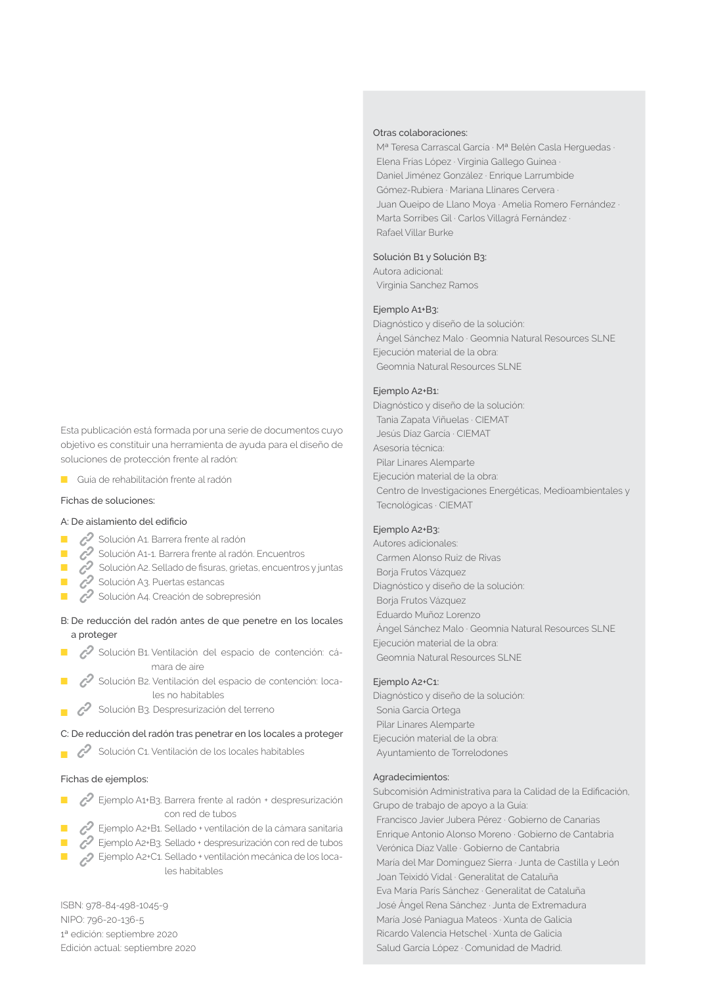

<!doctype html>
<html lang="es"><head><meta charset="utf-8">
<meta name="viewport" content="width=device-width, initial-scale=1">
<title>GUIA · Página física 3</title><link rel="stylesheet" href="../estilo.css">
</head><body>
<nav><a href="../index.html">Índice</a> › <a href="../doc/guia-pdf-f3314b0414fe-sin-fecha-e58e54b822cf.html">GUIA</a></nav>

<h1>GUIA · Página física 3</h1>
<header class="meta"><p><strong>Guia de rehabilitacion frente al radon Fichas</strong> · edición sin-fecha · capa guia</p>
<p>Documento <code>GUIA-PDF-f3314b0414fe</code> · SHA-256 del PDF <code>e58e54b822cf4ab00e258f0eb50c0f06a8c04e3730a7f530d224485e2a5bb02e</code></p>
<p>Página física 3 de 82.</p>
<p><a href="../../contenido/docs/GUIA-PDF-f3314b0414fe/sin-fecha__e58e54b822cf/fuente.pdf#page=3">Copia fiel del PDF fuente</a> · <a href="https://www.codigotecnico.org/pdf/GuiasyOtros/GuiaRadon/Guia_de_rehabilitacion_frente_al_radon+Fichas.pdf">Fuente oficial</a></p>
<p><a href="https://www.codigotecnico.org/Guias/GuiaRadon.html">Ficha de la disposición en la fuente oficial</a></p>
<div class="cita"><p><a href="../../contenido/docs/GUIA-PDF-f3314b0414fe/sin-fecha__e58e54b822cf/fuente.pdf#page=2">Créditos y autoría en el PDF fuente</a>. Reproducción con cita de fuente y autores.</p>
<p>Permiso literal: Se permite la reproducción total o parcial del contenido de este nible en el momento de su publicación. No se aceptará por las institu­ documento siempre y cuando se cite la fuente original</p>
<details><summary>Leer los créditos completos y la autoría</summary><pre class="literal">Este documento ha sido elaborado por el Instituto de ciencias
de la construcción Eduardo Torroja (IETcc) bajo la supervisión
de la Dirección General de Agenda Urbana y Arquitectura del
Ministerio de Transportes, Movilidad y Agenda Urbana (MITMA).

El IETcc, perteneciente al Consejo Superior de Investigaciones
Científicas (CSIC), es el centro de investigación en edificación
de referencia en España. La Unidad de Calidad en la Construc­
ción del IETcc asesora al MITMA en la elaboración del Código
Técnico de la Edificación que, desde el año 2019, cuenta con la
sección HS6 Protección frente a la exposición al radón.

Dirección y Coordinación:
Ministerio de Transportes, Movilidad y Agenda Urbana
 Isabel Marcos Anasagasti
 Raquel Lara Campos
 Eduardo González de Prado
Instituto de ciencias de la construcción Eduardo Torroja CSIC
 Pilar Linares Alemparte

Autoras:
 Pilar Linares Alemparte
 Sonia García Ortega

Colaboradoras:
 Virginia Sánchez Ramos
 Karina Angélica García Pardo

Edita:
 Centro de Publicaciones Secretaría General Técnica
 Ministerio de Transportes, Movilidad y Agenda Urbana©

Entidad colaboradora:
 Consejo Superior de Investigaciones Científicas · CSIC
 Ministerio de Ciencia e Innovación

    Catálogo de publicaciones de la Administración General
    del Estado: publicacionesoficiales.boe.es

    Centro virtual de publicaciones del Ministerio de Transpor­
     tes, Movilidad y Agenda Urbana: www.mitma.gob.es

    Página web del Código Técnico de la Edificación:

                                                                                                                                                                              SECRETARÍA                                                                                                                                                                     GENERAL                                                                                                                                                                         DE    www.codigotecnico.org                                                                                                                                              AGENDA URBANA                                                                                                                                                                           Y VIVIENDA                                                                                                                                                 MINISTERIO                                                                                                           GOBIERNO                                                                                                                           DE                                                                                                                                           TRANSPORTES,                                                                                                                                                 MOVILIDAD                                                                                                             DE ESPAÑA                                                                                                                               Y AGENDA                                                                                                                           URBANA                                                                                                                                                               DIRECCIÓN                                                                                                                                                                     GENERAL                                                                                                                                                                         DE
Maquetación y diseño gráfico:                                                                                                     AGENDA URBANAY ARQUITECTURA
 Lapizmente. Estrategia • Diseño Gráfico


                                                                                                                                             CIENCIAFotografía portada:                                                                                GOBIERNODE ESPAÑA      MINISTERIODEE INNOVACIÓN
 Sonia García Ortega

Los contenidos o ideas recogidas en este documento pertenecen a
sus autores. Este documento está basado en el conocimiento dispo­     Se permite la reproducción total o parcial del contenido de este
nible en el momento de su publicación. No se aceptará por las institu­     documento siempre y cuando se cite la fuente original y a sus
ciones ni los autores implicados responsabilidad de ningún tipo por el                                                                    autores.
uso de estas recomendaciones. Las figuras tienen carácter ilustrativo
y no deben interpretarse como detalles constructivos.</pre></details></div>
<div class="aviso"><strong>Alcance y límites</strong><ul><li>Extracción automática sin revisión técnica humana completa. Contraste tablas, fórmulas, notas y excepciones con el PDF. La edición disponible no determina la vigencia ni la aplicabilidad a un proyecto.</li><li>Guia o documento divulgativo; no es texto normativo.</li><li>Extracción automática; el cotejo humano está pendiente.</li><li>Semántica y tablas no equivalen a validación exhaustiva.</li></ul></div></header>
<nav><a href="guia-pdf-f3314b0414fe-sin-fecha-e58e54b822cf__p0002.html">← Página 2</a> · <a href="guia-pdf-f3314b0414fe-sin-fecha-e58e54b822cf__p0004.html">Página 4 →</a></nav>
<p>Formato: <a href="../../contenido/docs/GUIA-PDF-f3314b0414fe/sin-fecha__e58e54b822cf/pagina/p0003.md">Texto de la página (Markdown)</a></p>
<p><a href="../../contenido/docs/GUIA-PDF-f3314b0414fe/sin-fecha__e58e54b822cf/bloque/p0003.json">JSON de bloques</a></p>
<pre class="literal">Otras colaboraciones:
Mª Teresa Carrascal García · Mª Belén Casla Herguedas ·
Elena Frías López · Virginia Gallego Guinea ·
Daniel Jiménez González · Enrique Larrumbide
Gómez-Rubiera · Mariana Llinares Cervera ·
Juan Queipo de Llano Moya · Amelia Romero Fernández · 
Marta Sorribes Gil · Carlos Villagrá Fernández ·
Rafael Villar Burke
Solución B1 y Solución B3:
Autora adicional:
Virginia Sanchez Ramos 
Ejemplo A1+B3:
Diagnóstico y diseño de la solución:
Ángel Sánchez Malo · Geomnia Natural Resources SLNE
Ejecución material de la obra:
Geomnia Natural Resources SLNE
Ejemplo A2+B1:
Diagnóstico y diseño de la solución:
Tania Zapata Viñuelas · CIEMAT
Jesús Díaz García · CIEMAT
Asesoría técnica:
Pilar Linares Alemparte
Ejecución material de la obra:
Centro de Investigaciones Energéticas, Medioambientales y    
Tecnológicas · CIEMAT
Ejemplo A2+B3:
Autores adicionales:
Carmen Alonso Ruiz de Rivas
Borja Frutos Vázquez 
Diagnóstico y diseño de la solución:
Borja Frutos Vázquez
Eduardo Muñoz Lorenzo
Ángel Sánchez Malo · Geomnia Natural Resources SLNE
Ejecución material de la obra:
Geomnia Natural Resources SLNE
Ejemplo A2+C1:
Diagnóstico y diseño de la solución:
Sonia García Ortega
Pilar Linares Alemparte
Ejecución material de la obra:
Ayuntamiento de Torrelodones
Agradecimientos:
Subcomisión Administrativa para la Calidad de la Edificación, 
Grupo de trabajo de apoyo a la Guía:
Francisco Javier Jubera Pérez · Gobierno de Canarias
Enrique Antonio Alonso Moreno · Gobierno de Cantabria
Verónica Díaz Valle · Gobierno de Cantabria
María del Mar Domínguez Sierra · Junta de Castilla y León
Joan Teixidó Vidal · Generalitat de Cataluña
Eva María París Sánchez · Generalitat de Cataluña
José Ángel Rena Sánchez · Junta de Extremadura
María José Paniagua Mateos · Xunta de Galicia
Ricardo Valencia Hetschel · Xunta de Galicia
Salud García López · Comunidad de Madrid.
Esta publicación está formada por una serie de documentos cuyo 
objetivo es constituir una herramienta de ayuda para el diseño de 
soluciones de protección frente al radón:
	
■
Guía de rehabilitación frente al radón
Fichas de soluciones:
A: De aislamiento del edificio 
	
■
 
  Solución A1. Barrera frente al radón
	
■
 
  Solución A1-1. Barrera frente al radón. Encuentros
	
■
 
   Solución A2. Sellado de fisuras, grietas, encuentros y juntas 
	
■
 
  Solución A3. Puertas estancas
	
■
 
  Solución A4. Creación de sobrepresión
B: De reducción del radón antes de que penetre en los locales 
a proteger 
	
■
 
  Solución B1. Ventilación del espacio de contención: cá­
mara de aire
	
■
 
  Solución B2. Ventilación del espacio de contención: loca­
les no habitables
	
■
   Solución B3. Despresurización del terreno
C: De reducción del radón tras penetrar en los locales a proteger 
	
■
   Solución C1. Ventilación de los locales habitables
Fichas de ejemplos:
	
■
 
  Ejemplo A1+B3. Barrera frente al radón + despresurización 
con red de tubos
	
■
 
  Ejemplo A2+B1. Sellado + ventilación de la cámara sanitaria
	
■
 
  Ejemplo A2+B3.  Sellado + despresurización con red de tubos
	
■
 
  Ejemplo A2+C1. Sellado + ventilación mecánica de los loca-
les habitables
ISBN: 978-84-498-1045-9
NIPO: 796-20-136-5
1ª edición: septiembre 2020
Edición actual: septiembre 2020
</pre>
<figure><a href="../../contenido/docs/GUIA-PDF-f3314b0414fe/sin-fecha__e58e54b822cf/figura/p0003.png"></a><figcaption>Página visual 3, para contrastar fórmulas, tablas y figuras.</figcaption></figure>
<h2>Segmentos que incluyen esta página</h2><ul>
<li><a href="../apartado/guia-pdf-f3314b0414fe-sin-fecha-e58e54b822cf__a0003.html">a0003 · sección HS6 Protección frente a la exposición al radón.</a></li>
</ul>
<footer>Generado estáticamente desde el corpus normalizado; sin JavaScript ni servicios externos. El HTML es una vista reproducible; conserve la fuente y la edición al citar.</footer>
</body></html>
